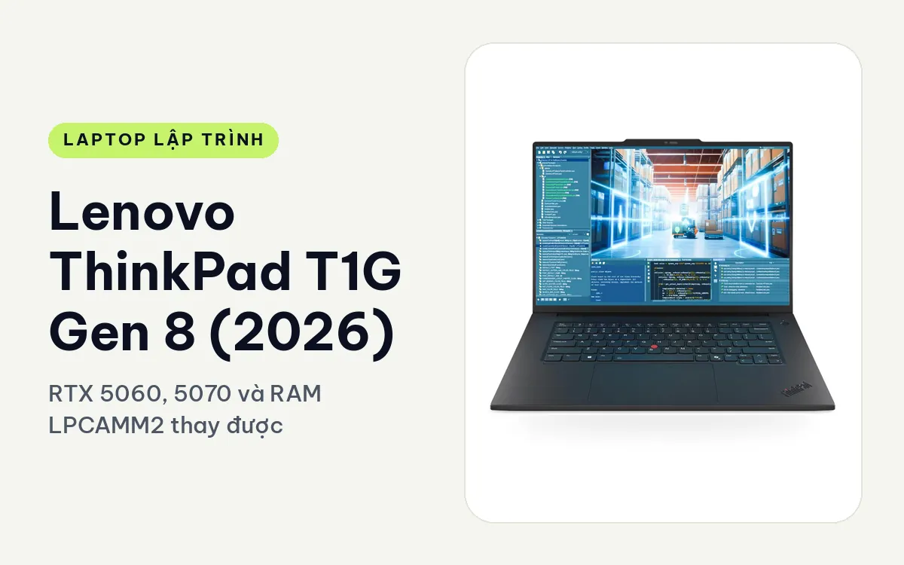
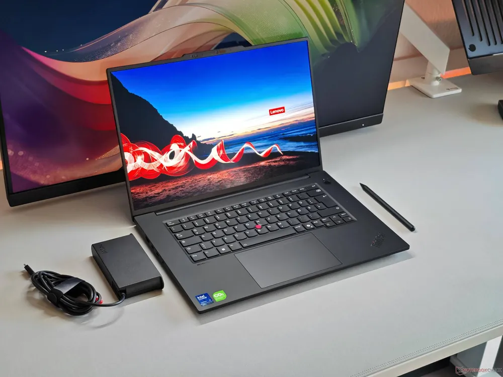
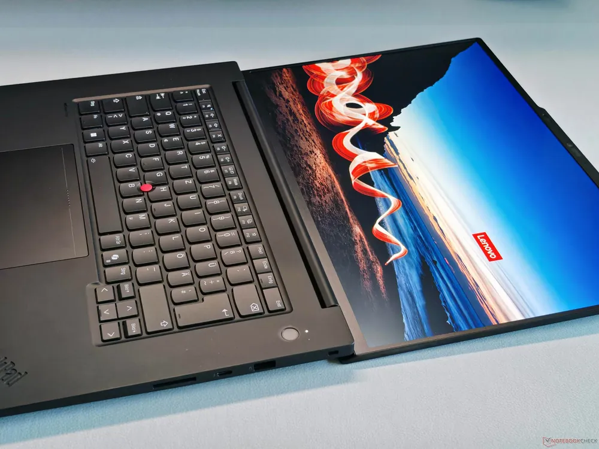
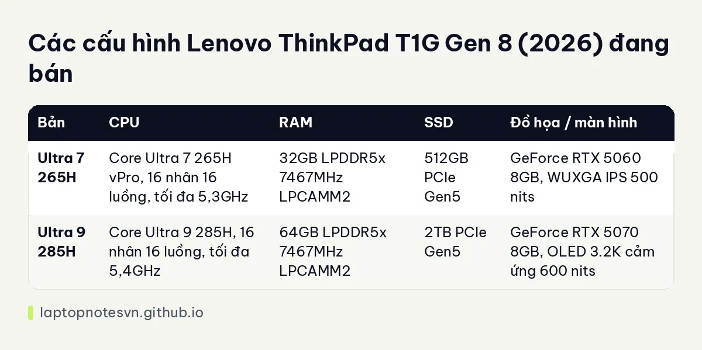

Lenovo ThinkPad T1G Gen 8 (2026) cho lập trình - RTX 5060, 5070 và RAM LPCAMM2 thay được

Lenovo ThinkPad T1G Gen 8 (2026) là máy 16 inch có card GeForce RTX trong thân ThinkPad, và điều này khá hiếm. Hai dòng workstation trước dùng card chuyên nghiệp RTX PRO, còn T1G dùng GeForce RTX 5060 hoặc 5070, nên hợp người vừa code vừa dựng game, chạy CUDA, thử mô hình AI cục bộ.
Điểm hay thứ hai là bộ nhớ LPCAMM2, thay được. Với dân lập trình hay đổi dự án và hay thiếu RAM, chi tiết này đáng giá ngang thông số chip.
Thiết kế
Vỏ đen nhám, chấm đỏ TrackPoint, dáng vuông vức tối giản đúng chất ThinkPad. Nắp máy dùng 75% nhôm tái chế, phần khung bàn phím dùng 90% hợp kim magiê nhôm tái chế, đạt chuẩn MIL-STD-810H. Máy cũng có chứng nhận ENERGY STAR 9.0 và TCO 10.0.

Bàn phím giữ hành trình 1,5 mm, đèn nền, chống tràn, không có cụm số, có phím Copilot. Touchpad haptic phủ kính 135 x 85 mm. Với người gõ code cả ngày thì đây vẫn là một trong những bàn phím dễ chịu nhất trên máy mỏng nhẹ.
Màn hình 16 inch tỉ lệ 16:10. Bản thấp dùng WUXGA IPS 500 nits phủ 100% sRGB, bản cao dùng Tandem OLED 3.2K, 40-120Hz, cảm ứng, 600 nits, DisplayHDR 600 và Dolby Vision. Tỉ lệ 16:10 cho chiều dọc rộng hơn 11% so với 16:9, dễ mở hai cửa sổ code cạnh nhau.
Cổng kết nối gồm 2 Thunderbolt 5, 1 Thunderbolt 4, 1 USB-A 10Gbps luôn cấp điện, HDMI 2.1, đầu đọc SD Express 7.0 và jack 3,5 mm. Cắm tối đa 4 màn hình độc lập cùng lúc, gồm màn trong và 3 màn ngoài. Máy hỗ trợ Wi-Fi 7 và Bluetooth 5.4.
Mang đi hằng ngày
Máy nặng 1,84 kg. Tên gọi và mô tả đều xếp T1G vào nhóm workstation mỏng nhẹ, dễ đặt vào ba lô hơn các máy 16 inch trước. Củ sạc chỉ cần 140W, nhỏ hơn bộ sạc của nhiều máy gaming cùng GPU.

Pin 90Wh giúp máy đi gần trọn ngày: mô tả nêu pin dùng thực tế lên tới 11 giờ khi duyệt web. Pin, SSD và loa đều thuộc diện khách hàng tự thay, tiện cho ai muốn giữ máy dài hạn.
Đánh đổi cần biết: card đồ họa chạy mức TGP 75W để giữ máy ở 1,84 kg. Nó thấp hơn máy gaming cùng chip đồ họa, nhưng đổi lại máy gọn và mát hơn khi chạy lâu.
Có mấy cấu hình
Có 2 cấu hình, đều dùng RAM LPDDR5x 7467MHz dạng LPCAMM2 và SSD PCIe Gen5.

| Bản | CPU | RAM | SSD | Đồ họa / màn hình |
|---|---|---|---|---|
| Ultra 7 265H | Core Ultra 7 265H vPro, 16 nhân 16 luồng, tối đa 5,3GHz | 32GB LPDDR5x 7467MHz LPCAMM2 | 512GB PCIe Gen5 | GeForce RTX 5060 8GB, WUXGA IPS 500 nits |
| Ultra 9 285H | Core Ultra 9 285H, 16 nhân 16 luồng, tối đa 5,4GHz | 64GB LPDDR5x 7467MHz LPCAMM2 | 2TB PCIe Gen5 | GeForce RTX 5070 8GB, OLED 3.2K cảm ứng 600 nits |
Bản Core Ultra 7 265H, RTX 5060, 32GB
Bản này nhắm vào người cần GPU rời nhưng muốn giữ ngân sách. 32GB RAM chạy ổn Docker nhiều container, máy ảo và Android Studio. Card RTX 5060 8GB có CUDA nên đủ để học deep learning, chạy mô hình nhỏ cục bộ hoặc làm game dev bằng Unity và Unreal ở mức vừa.
SSD 512GB là chỗ yếu của bản này: một vài dataset hoặc image Docker lớn sẽ lấp đầy khá nhanh, mà thay SSD thì tự làm được. Màn WUXGA 500 nits sắc nét vừa đủ, không phải màn để chỉnh màu chuyên nghiệp.
Bản Core Ultra 9 285H, RTX 5070, 64GB, OLED
Bản mạnh nhất, hợp compile dự án lớn, render, huấn luyện mô hình cỡ vừa và công việc nhiều máy ảo. Dữ liệu từ trang sản phẩm cho thấy kết quả Cinebench 2024 đa nhân khoảng 1104 điểm và bài render Handbrake dài hơi không bị giảm xung nhờ tản nhiệt tốt.
Với 2TB SSD và 64GB RAM, anh chị giữ được nhiều dataset và image trên máy, không phải xóa đi để lấy chỗ. Màn OLED đáng tiền nếu hay dựng video, thiết kế UI hoặc ngồi trước màn hình cả ngày và cần màu đẹp.
Nhưng nếu việc chính chỉ là code web hay backend, bản này dư sức và phần đắt nhất nằm ở card đồ họa, thứ ít khi được dùng.
Nên chọn bản nào
Muốn học AI, CUDA hay game dev mà vẫn gọn, bản RTX 5060 là điểm cân bằng. Làm việc nặng hằng ngày hoặc cần màu OLED, chọn bản RTX 5070. Cả hai đều có đường nâng RAM nhờ LPCAMM2.
Nếu cần GPU chuyên nghiệp RTX PRO thay GeForce, xem ThinkPad P1 Gen 8 cho lập trình. Về dung lượng RAM nên mua, đọc thêm lập trình viên cần bao nhiêu RAM.
Đăng ngày 08/11/2026